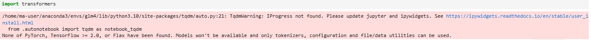

在华为云昇腾服务器部署GLM4 — 2
下载运行必须的python package
下载huggingface的transformers库
我们可以通过访问Huggingface了解部署GLM-4-9B需要的环境，官方最新更新的文档建议从transformers>=4.46.0开始，减少后续更新可能面临的兼容性问题。打开创建的虚拟环境，使用命令行pip install transformers>=4.46.0下载需要transformers库。我们可以通过pip show transformers（Terminal）或!pip show transformers（Notebook）查看是否下载成功（如下）。
Tips2： 在下载transformers时偶尔会出现报错，原因是缺少必要的package，只需要按照报错pip缺少的内容即可。
运行后发现worning提示 “None of PyTorch, TensorFlow >= 2.0, or Flax have been found. Models won’t be available and only tokenizers, configuration and file/data utilities can be used.” ，这是因为transformers在加载模型的过程中需要依赖深度学习框架（PyTorch/TensorFlow）来加载模型权重，但是我们当前的虚拟环境并未安装。

下载适用于npu的Pytorch
区别于npu，我们使用的昇腾算力是aarch64架构下的npu版本。因此我们需要下载能够运行在npu环境下的PyTorch版本
通过访问链接查看在aarch64架构上与python版本对应的PyTorch。具体的python版本我们可以在虚拟环境通过python -V查看，在示例中我们使用的是3.10的python版本，通过wget下载对应链接下的文件wget <对应的.whl文件链接>（我下载的版本为2.1.0）。下载成功后在下载目录下使用pip3输入对应命令pip3 install <文件名.whl>完成对package的安装。
在此基础上我们进一步通过下载torch_npu插件以达成适配与npu的目的，对应的插件通过访问链接的方式获取，和安装pytorch的方式相同我们仍是通过wget <对应的.whl文件链接>并使用pip3安装的方式完成对插件的配置。
Tips: 若Pytorch版本为2.1.0，出现“找不到google或者protobuf或者protobuf版本过高”报错时，需执行如下命令：
pip install protobuf==3.20
在安装完成后，我们可以通过import导入下载的torch和torch-npu包，利用 torch_npu.npu.is_available() 和 x = torch.randn(2, 2).npu();y = torch.randn(2, 2).npu();z = x.mm(y) 验证使用安装成功，若显示True并能成功计算即为安装成功。
如果你已经在一个环境中安装了所有依赖，并且遇到了依赖冲突，你可以使用
pip freeze命令来导出当前环境的所有依赖到一个文件，然后在新环境中安装这些依赖。
·pip freeze > requirements.txt
·pip install -r requirements.txt
下载需要的大语言模型
首先我们通过创建models文件夹保存我们需要下载的模型，由于在不使用学术加速的情况下使用huggingface下载需要的模型可能会出现超时，我们可以通过使用国内由阿里巴巴达摩院推出的开源模型社区与平台下载需要的模型。以glm-4-9b-chat为例，我们通过pip install modelscope安装ModelScope，并通过python code或者命令行下载完整模型库。
1 | from modelscope import snapshot_download |
1 | # --local_dir 后面为下载的目标目录 |